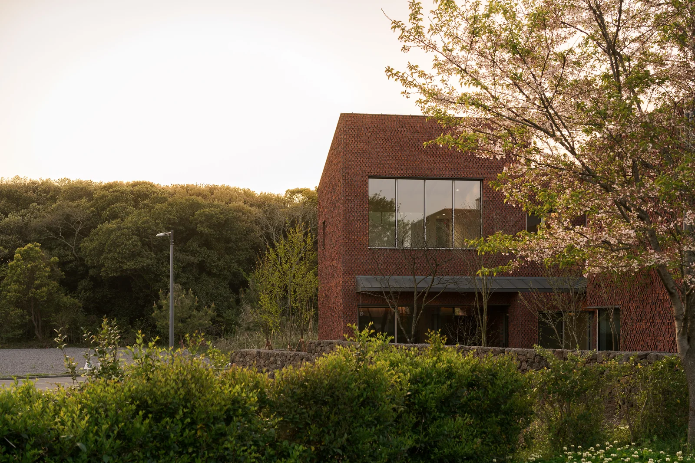
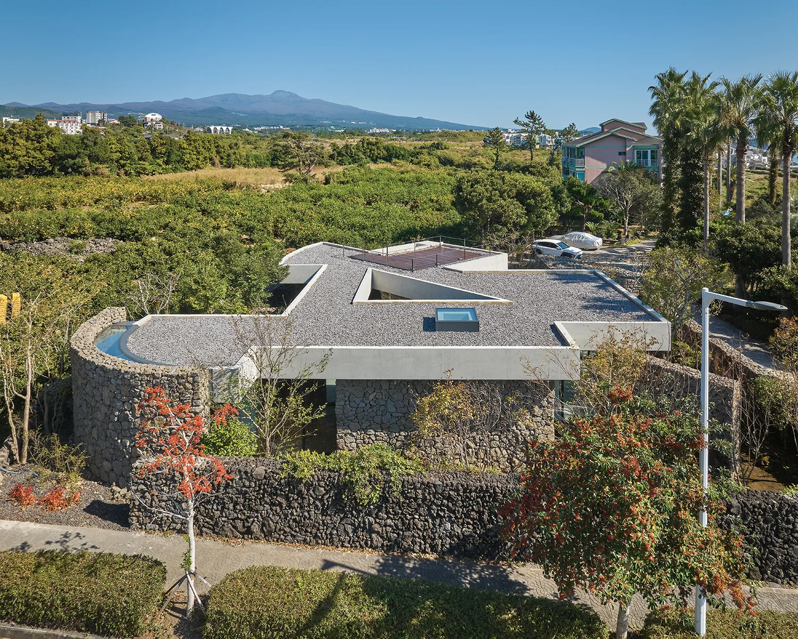
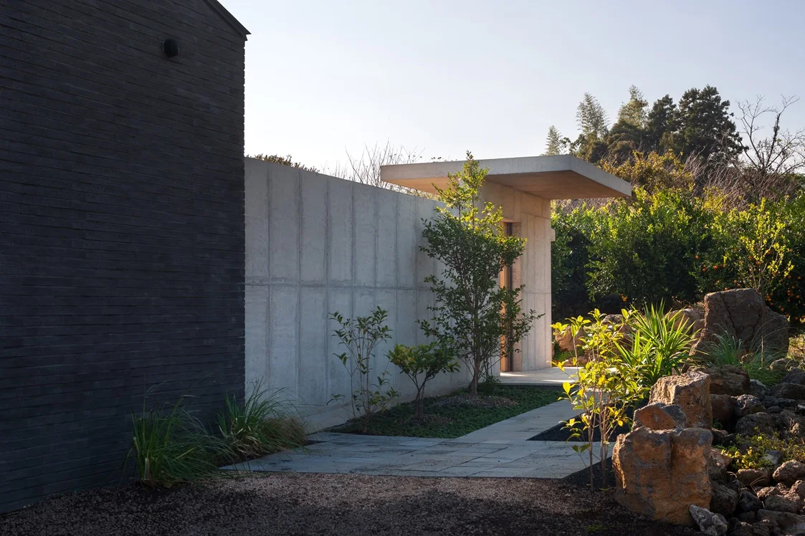

하백 · 이아
건축가 설계 주택과 외장·실내 마감 사례
6개 프로젝트 · 74개 이미지
평가 순위별 업체 비교
평가 순위와 실제 시공 사례를 바탕으로
제주집에 맞는 시공사를 비교합니다.
3개 업체 · 17개 프로젝트 · 178개 이미지

건축가 설계 주택과 외장·실내 마감 사례

단층 RC 주택과 마당·중정의 연결

작은 RC 주택과 에이루트의 반복 협업 사례
업체별 포트폴리오
사진을 누르면 크게 볼 수 있습니다.
문·창 프레임과 천장선, 단층 주택의 외부 통로 마감을 봅니다.
이미지 출처 이아컴퍼니 · 설계 스마트 건축사사무소
경사지의 레벨과 지붕, 외부 통로와 실내가 이어지는 구성을 봅니다.
사진 Lee Jeonghwan·Lee Sungbeom (사진집 표기) · 출처 SPACE
여러 동의 배치, 징크·현무암 외장과 객실의 실내 마감을 봅니다.
기간 시공 2022.04–2023.03 · 업체 표기
설계 지랩 건축사사무소
시공 시공 이아컴퍼니
이미지 출처 이아컴퍼니 · 설계 지랩 건축사사무소
단독주택과 근린생활시설이 함께 있는 프로젝트의 외장·창호·실내 마감을 봅니다.
이미지 출처 이아컴퍼니 · 설계 포머티브 건축사사무소
단층 RC 주택의 현무암 벽, 큰 창과 중정의 연결을 봅니다.
사진 노경 · 출처 SPACE · 설계 유현준건축사사무소
주택·사무실·구옥이 연결된 배치와 목재 문, 목욕채의 타일 마감을 봅니다.
사진 박영채 · 출처 SPACE · 설계 에이루트
노출콘크리트 외장, 처마·곡면·개구부와 숲을 향한 실내 공간을 봅니다.
규모 연면적 195.21㎡
기간 준공 2025 · 설계자 표기
설계 김오건축사사무소 · 건축사사무소 오 협업
시공 시공 지에이유아키팩토리
사진 황효철 · 출처 김오건축사사무소
RC 주택의 경사지붕, 큰 창과 정원에 면한 입면을 봅니다.
사진 박영채 · 출처·설계 에이루트
두 동의 단층 스테이, 외장과 실내 공간의 구성을 봅니다.
규모 연면적 103.05㎡ · 건축면적 113.93㎡와 구분
기간 2024년 9월호 소개 · 준공일과 구분
설계 에이루트
시공 시공 GAU · 조경 보림조경 · 주방 가구 나무놀이터
사진 박영채 · 출처 전원속의 내집 · 설계 에이루트
프로젝트 소개
공식 원문 ↗작은 단층 RC 주택의 처마, 큰 창과 외부공간, 실내 마감을 봅니다.
규모 연면적 106.17㎡ · 설계자 개요
기간 프로젝트 2022–2024 · 순수 시공 기간과 구분
설계 에이루트 건축사사무소
시공 설계자 시공 표기 다봄 · 조경 에이루트·건축주 직영
사진 박영채 · 출처·설계 에이루트
RC 2층 주택의 중정, 큰 창과 낮은 가로창, 서로 다른 외장 재료를 봅니다.
사진 박영채 · 출처·설계 에이루트
1층 RC와 2층 목구조가 결합된 주택의 목재 외피, 처마와 마당을 봅니다.
사진 이상훈 · 출처 SPACE · 설계 에이루트
과수원에 면한 낮은 건물, 큰 창과 주택·티룸·스테이의 실내외 연결을 봅니다.
규모 약 167.5㎡ · 주택·티룸·스테이 합계
기간 프로젝트 2017–2019
설계 에이루트 건축사사무소
시공 설계자 시공 표기 다봄주택
사진 박영채 · 출처·설계 에이루트
단층 목조 주택과 정원, 처마 아래의 실내외 공간을 봅니다.
사진 박영채 · 출처·설계 에이루트
선정할 때 비교할 내용
솔비나무집·화분·연안재를 중심으로 큰 창, 외장 재료와 실내 마감을 비교합니다.
상담할 내용우리 도면 기준 공사비, 현장소장, 창호·석재·지붕 공종팀과 마감 견본을 상담합니다.
호미·하천리 H·남원 항심당을 중심으로 단층 주택과 외부공간의 연결을 비교합니다.
상담할 내용건축·토목의 견적 범위, 현장소장, 외부공간 공정과 착공 일정을 상담합니다.
저지 오름 아래·용담 심양재를 중심으로 RC 주택을, 나머지 사례에서 실내외 마감을 비교합니다.
상담할 내용기존 현장 방문, 담당 소장, 우리 도면 기준 견적과 공정·보수 일정을 상담합니다.